ID
Version
This article is for the PC version of Stellaris only.
IDs refer to the internal names used by all assets within the game files. They can be referenced when executing console commands, editing savegames or creating custom events or starting systems.
Celestial bodies
|
|
Please help with verifying or updating this section. It was last verified for version 4.3. |
| Celestial body (habitable) | ID |
|---|---|
| pc_alpine | |
| pc_arctic | |
| pc_arid | |
| pc_continental | |
| pc_desert | |
| pc_ocean | |
| pc_savannah | |
| pc_tropical | |
| pc_tundra | |
| pc_nuked | |
| pc_gaia | |
| pc_relic | |
| pc_volcanic | |
| pc_city | |
| pc_hive | |
| pc_machine | |
| pc_nanotech | |
| pc_habitat | |
| pc_ringworld_habitable | |
| pc_shattered_ring_habitable | |
| pc_cosmogenesis_world |
| Celestial body (uninhabitable) | ID |
|---|---|
| pc_ai | |
| pc_asteroid | |
| pc_rare_crystal_asteroid | |
| pc_ice_asteroid | |
| pc_barren | |
| pc_barren_cold | |
| pc_broken | |
| pc_egg_cracked | |
| pc_frozen | |
| pc_gas_giant | |
| pc_molten | |
| pc_shattered | |
| pc_shielded | |
| pc_shrouded | |
| pc_toxic | |
| pc_ringworld_habitable_damaged | |
| pc_ringworld_seam | |
| pc_ringworld_seam_damaged | |
| pc_ringworld_tech | |
| pc_ringworld_tech_damaged | |
| pc_astral_scar |
| Celestial body (stars) | ID |
|---|---|
| pc_b_star | |
| pc_a_star | |
| pc_f_star | |
| pc_g_star | |
| pc_k_star | |
| pc_m_star | |
| pc_m_giant_star | |
| pc_t_star | |
| pc_black_hole | |
| pc_neutron_star | |
| pc_pulsar | |
| pc_toxoid_star | |
| pc_rift_star |
Districts
|
|
Please help with verifying or updating this section. It was last verified for version 3.14. |
| District | ID |
|---|---|
| district_city | |
| district_hive | |
| district_nexus | |
| district_industrial | |
| district_generator | |
| district_mining | |
| district_farming | |
| Trade District | district_srw_commercial |
| Coordination District | district_machine_coordination |
| Resort District | district_resort |
| district_prison | |
| district_prison_industrial | |
| district_slave | |
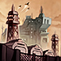 Battle Thrall District |
district_battle_thrall |
| district_crashed_slaver_ship |
{kind=link}
{kind=link}
{kind=link}
{kind=link}
| District (habitat) | ID |
|---|---|
| district_hab_housing | |
| district_hab_industrial | |
| district_hab_science | |
| district_hab_energy | |
| district_hab_mining | |
| district_orders_demesne |
| District (arcology) | ID |
|---|---|
| district_arcology_housing | |
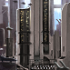 Foundry Arcology |
district_arcology_arms_industry |
| district_arcology_civilian_industry | |
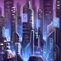 Leisure Arcology |
district_arcology_leisure |
| Sanctuary Arcology | district_arcology_organic_housing |
| Administrative Arcology | district_arcology_administrative |
| Ecclesiastical Arcology | district_arcology_religious |
{kind=link}
{kind=link}
| District (other) | ID |
|---|---|
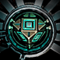 Ampliative Speculator |
district_cosmogenesis_world_logic |
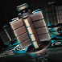 Neural Gate |
district_cosmogenesis_world_science |
{kind=link}
{kind=link}
Orbital deposits
|
|
Please help with verifying or updating this section. It was last verified for version 4.3. |
Deposits that require a mining station cannot be added to celestial bodies that have deposits that require a research station and vice versa.
| Orbital deposit | ID | Deposit range |
|---|---|---|
| d_energy_# | Between 1 and 10 | |
| d_minerals_# | Between 1 and 10 | |
| d_food_# | 3 or 10 | |
| d_trade_value_# | Between 1 and 10 | |
| d_alloys_# | Between 1 and 5, or 10, 25 | |
| d_exotic_gases_# | Between 1 and 5 | |
| d_rare_crystals_# | Between 1 and 5 | |
| d_volatile_motes_# | Between 1 and 5 | |
| d_living_metal_deposit | none | |
| d_artifacts_mining_# | Between 1 and 3 |
| Orbital deposit | ID | Deposit range |
|---|---|---|
| d_engineering_# | Between 1 and 10 | |
| d_physics_# | Between 1 and 10 | |
| d_society_# | Between 1 and 10, or 15 | |
| d_dark_matter_deposit_# | 1, 2, 3 or 10 | |
| d_zro_deposit_# | Between 1 and 5 | |
| d_artifacts_research_# | Between 1 and 3 | |
| d_astral_threads_deposit_# | Between 1 and 3 | |
| d_vast_unity_deposit | none | |
| d_nanites_deposit | none |
Planetary features
|
|
Please help with verifying or updating this section. It was last verified for version 3.11. |
Example: effect add_deposit = d_underground_generator
| Planetary feature (common) | ID |
|---|---|
| d_abandoned_mining_tunnels | |
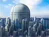 Ancient Reactor Pits |
d_ancient_reactor_pits |
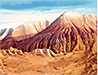 Arid Highlands |
d_arid_highlands |
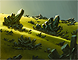 Betharian Fields |
d_betharian_deposit |
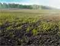 Black Soil |
d_black_soil |
| Boggy Fens | d_boggy_fens |
| Bountiful Plains | d_bountiful_plains |
| d_bubbling_swamp | |
| d_buzzing_plains | |
| Central Spire | d_central_spire |
| d_crystal_forest | |
| d_crystal_reef | |
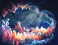 Crystalline Caverns |
d_crystalline_caverns |
| Dense Ruins | d_relic_dense_ruins |
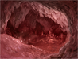 Dust Caverns |
d_dust_caverns |
| d_dust_desert | |
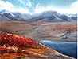 Fair Tundra |
d_forgiving_tundra |
| d_fertile_lands | |
| d_frozen_gas_lake | |
| d_fuming_bog | |
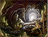 Fungal Caves |
d_fungal_caves |
| d_fungal_forest | |
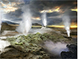 Geothermal Vents |
d_geothermal_vent |
| Great River | d_great_river |
| Green Hills | d_green_hills |
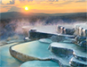 Hot Springs |
d_hot_springs |
| Immense Solar Array | d_immense_solar_array |
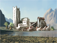 Industrial Sector |
d_industrial_sector |
| d_alien_pets_deposit | |
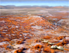 Lichen Fields |
d_lichen_fields |
| d_lush_jungle | |
| Marvelous Oasis | d_marvelous_oasis |
| d_metal_boneyard | |
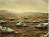 Mineral Fields |
d_mineral_fields |
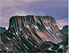 Mineral Striations |
d_mineral_striations |
| Natural Farmland | d_natural_farmland |
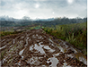 Nutritious Mudlands |
d_nutritious_mudland |
| d_ore_rich_caverns | |
| d_veiny_cliffs | |
| d_organic_landfill | |
| Prosperous Mesa | d_prosperous_mesa |
| d_rich_mountain | |
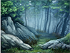 Rugged Woods |
d_rugged_woods |
| d_rushing_waterfalls | |
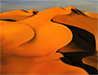 Searing Desert |
d_searing_desert |
| d_submerged_ore_veins | |
| d_teeming_reef | |
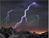 Tempestuous Mountain |
d_tempestous_mountain |
| Tropical Island | d_tropical_island |
| d_underwater_vent | |
| Alloy Deposit | d_hab_alloy_1 |
| Dark Matter Deposit | d_hab_dark_matter_1 |
| Exotic Gas Deposit | d_hab_gas_1 |
| Living Metal Deposit | d_hab_living_metal_1 |
| Rare Crystal Deposit | d_hab_crystal_1 |
| Volatile Mote Deposit | d_hab_mote_1 |
| Zro Deposit | d_hab_zro_1 |
| Nanite Deposit | d_hab_nanites_1 |
| Astral Threads Deposit | d_hab_astral_threads_1 |
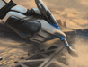 Minor Artifacts |
d_artifacts_planet_1 |
| d_organic_slurry |
{kind=link}
{kind=link}
{kind=link}
{kind=link}
{kind=link}
{kind=link}
{kind=link}
{kind=link}
{kind=link}
{kind=link}
{kind=link}
{kind=link}
{kind=link}
{kind=link}
{kind=link}
{kind=link}
{kind=link}
{kind=link}
{kind=link}
{kind=link}
{kind=link}
{kind=link}
{kind=link}
{kind=link}
{kind=link}
{kind=link}
{kind=link}
{kind=link}
{kind=link}
| Planetary feature (unique) | ID |
|---|---|
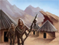 Abandoned Primitive Homesteads |
d_abandoned_primitive_homesteads |
| Alien Safari | d_alien_sanctuary |
| d_ancient_battlefield | |
| d_ancient_bombardment_craters | |
| d_ancient_mining_site | |
| d_ancient_one | |
| d_ancient_particle_accelerator | |
| d_arcane_device | |
| d_arcane_replicator | |
| d_toxic_god_blight_upon_the_land_upgraded | |
| d_crater_bluelotus | |
| d_bluelotus2 | |
| d_bluelotus | |
| Blue Lotus Ruin | d_ruin_bluelotus |
| Bogplants | d_bogplants |
| Cave Shroom Veins | d_cave_shroom_veins |
| d_virtual_power_small | |
| d_machine_minerals | |
| Crashed Cargo Ship | d_admirals_bickering_crashed_cargo_ship |
| d_crashed_slaver_ship | |
| d_cryonic_clones | |
| Crystalline Remains | d_crystal_kraken_body |
| d_crystalline_glacier | |
| Dayside Solar Farm | d_dayside_farm |
| d_ancient_manufactorium_crater | |
| d_dimensional_manipulation_device | |
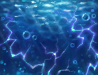 Electrified Oceans |
d_electrified_oceans |
| d_hab_lonely_bot_deposit | |
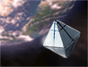 Federation Monument |
d_federation_hegemony_monument_2 |
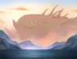 Feeding Dragon |
d_landed_dragon |
| d_flooded_mounds | |
| Former Relic World | d_former_relic_world |
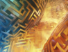 Fractal Seed |
d_fractal_seed |
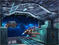 Freeport |
d_freeports |
| d_fungal_study_zone | |
| d_harvester_fields | |
| d_hyperfertile_valley | |
| d_impact_crater | |
| Incubate Wind Creatures | d_forceful_winds |
| d_irradiated_ruins | |
| Juvenile Nemma | d_house_turtle |
| d_worm_farm | |
| d_impossiblecorrie | |
| d_machine_care_home | |
| d_ancient_manufactorium_scrapyard | |
| d_lithoid_crater | |
| d_crashed_slaver_ship_memorial | |
| d_metallic_puddles | |
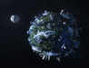 Microplanet Memorial |
d_microplanet_memorial |
| d_migrating_forest_reserve | |
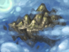 Mountain in the Sky |
d_sky_mountain |
| d_mutation_vats | |
| d_mutant_landfill | |
| d_myrmeku_power_farms | |
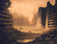 Nanite Swarm Remains |
d_nano_corpses |
| d_nanosands | |
| Nemma Mining Operation | d_turtle_miner |
| Numa's Breath | d_numas_breath |
| d_odd_factory | |
| d_ancient_manufactorium_working | |
| d_knights_calibrator | |
| Party Fever | d_disco_planet |
| d_toxic_god_envenomed_seas_upgraded | |
| Portal Research Area | d_portal_research_zone |
| d_processing_pens | |
| d_progenitor | |
| d_project_cornucopia | |
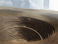 Prospectorium Strip Mine |
d_prospectorium_strip_mine |
| d_virtual_power_tiny | |
| d_radiotrophic_preserve | |
| d_toxic_god_pestilential_wasteland_upgraded | |
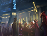 Remote Holdings |
d_landgrab_foreign_holdings |
| d_mineral_seabed | |
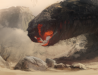 Rockworm Hive |
d_rockworm_hive |
| d_savage_wildlands | |
| Sentinels | d_sentinels |
| Sentinels Metal | d_sentinels_metal |
| Shattered Crystalline Remains | d_crystal_kraken_body_bombed |
| d_eater_deposit | |
| Spiral-Hewn Mine | d_worm_mine |
| Space-Time Anomaly | d_space_time_anomaly |
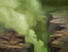 Spore Vents |
d_spore_vents |
| d_stasis_prison | |
| d_prisoner_intergration | |
| d_toxic_god_deitys_swarms_upgraded | |
| d_underground_contact_zone | |
| Subterranean Farming Caverns | d_underground_farm |
| d_underground_generator | |
| Subterranean Mining Sites | d_underground_mine |
| d_toxic_god_pools_most_venemous_upgraded | |
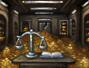 Treasure Vault |
d_treasure_planet |
| d_tree_of_life_home | |
| d_tree_of_life_colony | |
| d_toy_factory_complex | |
| d_underground_vault | |
| d_virtual_power_medium | |
| d_weapon_extraction_facility | |
| d_wetware_computer | |
| d_the_zone |
{kind=link}
{kind=link}
{kind=link}
{kind=link}
{kind=link}
{kind=link}
{kind=link}
{kind=link}
{kind=link}
{kind=link}
{kind=link}
{kind=link}
{kind=link}
{kind=link}
{kind=link}
{kind=link}
{kind=link}
| Planetary feature (special planets) | ID |
|---|---|
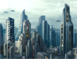 BosWash Metropolitan Axis |
d_boswash_metropolitan_axis |
| Delhi Sprawl | d_delhi_sprawl |
| d_great_albertan_crater | |
| d_mauritanian_security_zone | |
| Mesopotamian Urban Corridor | d_mesopotamian_urban_corridor |
| d_pacific_algae_tracts | |
| d_pearl_river_agglomerate | |
| Saharan Irrigation Project | d_saharan_irrigation_project |
| d_scandinavian_reclamation_sector | |
| d_polaris_city | |
| d_valley_of_zanaam | |
| d_irradiated_valley | |
| d_junk_canals | |
| d_junk_hollows | |
| d_junk_wastes | |
| d_hostile_fauna | |
| Ancient Facilities | d_ancient_facilities |
| d_space_ship_graveyard | |
| d_fallen_orbital_shipyard | |
| Promenade | d_star_mall_promenade |
| Scarred Land | d_pulsar_scarred |
| Volcanic Activity | d_volcanic_active_planet |
{kind=link}
Civics
Regular civics are safer to add via a combination of free_government and effect add_modifier = { modifier = fotd_triumviri multiplier = 999 }.
| Civic (regular) | ID |
|---|---|
| civic_psionic_sovereign | |
| civic_galactic_sovereign_megacorp | |
| civic_galactic_sovereign | |
| civic_great_khans_vision |
Resolutions
|
|
Please help with verifying or updating this section. It was last verified for version 3.14. |
Can be passed with the effect = { pass_resolution = resolution ID } command combination. To repeal the resolution, add _repeal to the resolution ID.
Example: effect = { pass_resolution = resolution_galacticreforms_form_council }
| Resolution | ID |
|---|---|
| resolution_commerce_buzzword_standardization | |
| resolution_commerce_leveraged_privateering | |
| resolution_commerce_underdeveloped_system_utilization | |
| resolution_commerce_holistic_asset_coordination | |
| resolution_commerce_profit_maximization_engines | |
| resolution_industry_regulatory_facilitation | |
| resolution_industry_collective_waste_management | |
| resolution_industry_building_a_better_tomorrow | |
| resolution_industry_environmental_ordinance_waivers | |
| resolution_industry_project_cornucopia | |
| resolution_sanctions_economic_1 | |
| resolution_sanctions_economic_2 | |
| resolution_sanctions_economic_3 | |
| resolution_greatergood_workers_rights | |
| resolution_greatergood_five_year_plans | |
| resolution_greatergood_greater_than_ourselves | |
| resolution_greatergood_balance_in_the_middle | |
| resolution_greatergood_universal_prosperity_mandate | |
| resolution_intergalacticdirective_regulated_growth | |
| resolution_intergalacticdirective_ensured_sovereignty | |
| resolution_intergalacticdirective_a_voice_for_all | |
| resolution_sanctions_administrative_1 | |
| resolution_sanctions_administrative_2 | |
| resolution_sanctions_administrative_3 | |
| resolution_ecology_recycling_initiatives | |
| resolution_ecology_natural_sanctuaries | |
| resolution_ecology_integrated_gardens | |
| resolution_ecology_environmental_control_board | |
| resolution_ecology_paradise_initiative | |
| resolution_galacticstudies_cooperative_research_channels | |
| resolution_galacticstudies_astral_studies_network | |
| resolution_galacticstudies_advanced_xenostudies | |
| resolution_galacticstudies_ethical_guideline_refactoring | |
| resolution_galacticstudies_extradimensional_experimentation | |
| resolution_divinity_comfort_the_fallen | |
| resolution_divinity_tithe_on_the_soulless | |
| resolution_divinity_right_to_work | |
| resolution_divinity_silence_the_soulless | |
| resolution_divinity_a_defined_purpose | |
| resolution_cosmic_storms_shared_knowledge | |
| resolution_cosmic_storms_protection_initiative | |
| resolution_cosmic_storms_galactic_management | |
| resolution_cosmic_storms_utilization_protocols | |
| resolution_cosmic_storms_manipulation_mandate | |
| resolution_cosmic_storms_advanced_storm_studies | |
| resolution_cosmic_storms_galactic_emergency_relief | |
| resolution_cosmic_storms_storm_encouragement_mandate | |
| resolution_cosmic_storms_control_restrictions | |
| resolution_cosmic_storms_preservation_initiative | |
| resolution_sanctions_tech_1 | |
| resolution_sanctions_tech_2 | |
| resolution_sanctions_tech_3 | |
| resolution_mutualdefense_the_readied_shield | |
| resolution_mutualdefense_military_readiness_act | |
| resolution_mutualdefense_enemy_of_my_enemy | |
| resolution_mutualdefense_castigation_proclamation | |
| resolution_mutualdefense_renegade_containment | |
| resolution_rulesofwar_guardian_angels | |
| resolution_rulesofwar_reverence_for_life | |
| resolution_rulesofwar_independent_tribunals | |
| resolution_rulesofwar_last_resort_doctrine | |
| resolution_rulesofwar_demobilization_initiative | |
| resolution_sanctions_military_1 | |
| resolution_sanctions_military_2 | |
| resolution_sanctions_military_3 | |
| resolution_defenseprivatization_defense_contracts | |
| resolution_defenseprivatization_private_support_troops | |
| resolution_defenseprivatization_condottieri | |
| resolution_defenseprivatization_security_business | |
| resolution_defenseprivatization_corporate_warlords | |
{kind=link}
{kind=link}
Species traits
|
|
Please help with verifying or updating this section. It was last verified for version 3.11. |
{kind=link}
{kind=link}
{kind=link}
{kind=link}
{kind=link}
{kind=link}
{kind=link}
{kind=link}
Leader Traits
| Self-affecting traits (max level) | |
|---|---|
| Adaptable | leader_trait_adaptable |
| Resilient | leader_trait_resillient |
| Eager | leader_trait_eager |
| Gifted (II) | leader_trait_gifted |
| Emotional Support Pet | leader_trait_emotional_support_pet |
| Backup Clone | leader_trait_has_backup_clone |
| Whispering Mind (III) | leader_trait_whispering_mind |
| Positive governor traits | |
| Unifier | leader_trait_bureaucrat |
| Environmental Engineer | leader_trait_environmental_engineer |
| Architectural Interest | leader_trait_architectural_interest |
| Agrarian Upbringing | leader_trait_agrarian_upbringing |
| Righteous (II) | leader_trait_righteous |
| Home planet traits | |
| Celebrity (II) | leader_trait_venerated |
| Energy Mogul (II) | leader_trait_capitalist |
| Private Mines (II) | leader_trait_private_mines |
| Scrapper (II) | leader_trait_scrapper |
| Homesteader (II) | leader_trait_homesteader |
| Entrepreneur (II) | leader_trait_entrepreneur |
| Positive Councilor Traits | |
| Charisma (II) | leader_trait_charismatic |
| Eye for Talent (II) | leader_trait_eye_for_talent |
| Logistic Understanding (II) | leader_trait_logistic_understanding |
| Mining Rush (II) | leader_trait_industrialist |
| Politician | leader_trait_politician |
| Champion of the People (II) | leader_trait_champion_of_the_people |
| Feedback Loop (II) | |
| Army Veteran | leader_trait_army_veteran |
| Retired Fleet Officer | leader_trait_retired_fleet_officer |
| Authority Traits | |
| Imperial Ruler | trait_imperial_heir |
| Imperial Heir | |
| Hive Mind | |
| Machine Interlligence | |
| Apex Predator | |
| Veteran Traits | |
| Adventurous Spirit (II) | leader_trait_adventurous_spirit |
| Scout (II) | leader_trait_scout |
| Geology Expert (III) | leader_trait_space_miner |
| Manufacturer (III) | leader_trait_manufacturer |
| Naturalist (III) | leader_trait_naturalist |
| Assembler (III) | leader_trait_assembler |
| Cartographer (III) | |
| Destiny Traits | |
| Xeno-Mediator | |
| Bot Lord | |
| Shroud Preacher | |
| Master Bureaucrat | leader_trait_master_bureaucrat |
| Perceptive Mentor | leader_trait_educator |
| Peacekeeper | leader_trait_peacekeeper |
| Special traits | |
| Luminary Bloodline | |
| Increased Lifespan | |
| Robotic Surrogate | leader_trait_robotic_surrogate |
| Second Chance | |
| Imperial Bloodline | |
| Genetic Purist | leader_trait_genetic_purist |
| Neurological Firewall | |
| Multiclass traits | |
| Brain Slug Host | leader_trait_brainslug |
| Ancient Knowledge | |
| Ancestral Inheritance | leader_trait_legendary_ancestors_knowledge |
| Cunning | |
| Storm Rider | leader_trait_storm_rider_official
leader_trait_storm_rider_commander leader_trait_storm_rider_scientist |
| Shroud Warped | |
| Species leader traits | |
| Limited Cyborg | leader_trait_limited_cyborg |
| Cyborg | leader_trait_cyborg |
| Ritualistic Implants | leader_trait_ritualistic_implants_cyborg |
| Erudition | |
| Psychic | leader_trait_psychic |
| Synth | |
| Virtual Leader | leader_trait_virtual |
Ships
|
|
Please help with verifying or updating this section. It was last verified for version 4.2. |
Fallen empire, other crisis and other guardian ships spawn as a box due to their appearance being tied to their graphical culture. Colony ships can be spawned with the console but will not work due to not having a species inside.
| Ship ID (base) | Ship |
|---|---|
| NAME_Constructor | Construction Ship |
| NAME_Prototype | Science Ship |
| NAME_Dagger | Corvette |
| NAME_Ravager | Destroyer |
| NAME_Derelict | Cruiser |
| NAME_Spearhead | Battleship |
| NAME_Seeker | Alien corvette |
| NAME_Starfang | Alien destroyer |
| NAME_Sword | Alien cruiser |
| NAME_Righteous | Cultist cruiser |
| NAME_Divine_Glory | Cultist battleship |
| NAME_Corsair | Pirate destroyer |
| NAME_Black_Earl | Pirate cruiser |
| NAME_Pirate_Galleon | Pirate battleship |
| NAME_Ancient_Mining_Drone | Ancient Mining Drone miner |
| NAME_Ancient_Combat_Drone | Ancient Mining Drone corvette |
| NAME_Ancient_Destroyer | Ancient Mining Drone destroyer |
| NAME_Cracked_Crystalline_Shard | Crystalline entity |
| NAME_Wraith | Unbidden destroyer |
| NAME_Phantom | Unbidden cruiser |
| NAME_Revenant | Unbidden battleship |
| NAME_Predator | Aberrant destroyer |
| NAME_Assassin | Aberrant cruiser |
| NAME_Huntress | Aberrant battleship |
| NAME_Obliterator | Vehement destroyer |
| NAME_Annihilator | Vehement cruiser |
| NAME_Eradicator | Vehement battleship |
| NAME_Protector | Nomad destroyer |
| NAME_Nomad_Cruiser | Nomad cruiser |
| NAME_Cloud_Entity | Void Cloud |
| NAME_Small_Space_Organism_Zebra | Space Amoeba |
| NAME_Great_Space_Organism | Space Amoeba Mother |
| NAME_Reanimated_Great_Space_Organism | Space Amoeba Mother reanimated |
| NAME_Tiyanki_Hatchling | Tiyanki Hatchling |
| NAME_Tiyanki_Calf | Tiyanki Calf |
| NAME_Tiyanki_Bull | Tiyanki Bull |
| NAME_Tiyanki_Cow | Tiyanki Cow |
| NAME_Tiyanki_Ox | Tiyanki Ox |
| NAME_Shroud_Avatar | Blue Shroud Avatar |
| NAME_Corrupted_Avatar | Red Shroud Avatar |
| NAME_DS47 | Space Probe |
| NAME_Dimensional_Horror | Dimensional Horror |
| NAME_Cleanser | Neutron Sweep colossus |
| NAME_Enforcer | Global Pacifier colossus |
| NAME_Reaper | World Cracker colossus |
| Ship ID (DLC) | Ship |
|---|---|
| NAME_Grand_Dragon | |
| NAME_Reanimated_Grand_Dragon | |
| NAME_Stellarite | |
| NAME_Spectral_Wraith_450THz | |
| NAME_Spectral_Wraith_520THz | |
| NAME_Spectral_Wraith_650THz | |
| NAME_Adopted_Amoeba_Centenarian | |
| NAME_Reanimated_Adopted_Amoeba_Centenarian | |
| NAME_Persistent | |
| NAME_AH4B | |
| NAME_Progenitor | |
| NAME_Reanimated_Progenitor | |
| NAME_Reclaimer | |
| NAME_Voidspawn | |
| NAME_Reanimated_Voidspawn | |
| NAME_Nanite_Dragon | |
| NAME_Nanite_Interdictor | |
| NAME_Nanite_Mothership | |
| NAME_Yojimbo | |
| NAME_Gunslinger | |
| NAME_Lessenger | |
| NAME_Herald | |
| NAME_Shard_Dragon | |
| NAME_Crisis_Star_Eater | |
| NAME_Sky_Dragon | |
| NAME_Reanimated_Sky_Dragon | |
| NAME_Bulwark_Battlewright | |
| NAME_Scholarium_Arctrellis | |
| NAME_Venomous_Deity | |
| NAME_FirstClaw | |
| NAME_Temple_of_Whispers | |
| NAME_Azaryn_Dome | |
| NAME_Formless_Cruiser | |
| NAME_Synth_Queen_Titan | |
| NAME_Synth_Queen_Royal_Guard | |
| NAME_Cutholoids_Hatchling | |
| NAME_Cutholoids_Juvenile | |
| NAME_Cutholoids | |
| NAME_Voidworms_Nymph | |
| NAME_Voidworms_Juvenile | |
| NAME_Voidworms_Mature | |
| NAME_Voidworms_Troika | |
| NAME_HIVE_FE_Small_Weaver_War | |
| NAME_HIVE_FE_Large_Weaver_Control | |
| NAME_HIVE_FE_Large_Mauler_Swarm | |
| NAME_HIVE_FE_Large_Harbinger | |
| NAME_HIVE_FE_Large_Stinger | |
| NAME_Behemoth_01 | |
| NAME_Behemoth_02 | |
| NAME_Behemoth_03 | |
| NAME_Behemoth_04 | |
| NAME_Boss_Voidspawn | |
| NAME_Ember_Cruiser | |
| NAME_Ember_Battleship | |
| NAME_Entropy_Conduit |
| Station ID | Station |
|---|---|
| NAME_Crystal_Nidus | Crystal Nidus |
| NAME_Drone_Home_Base | Home Base Ore Grinder |
| NAME_AI_Final_Core | Contingency Core |
| NAME_Sentry | Sentinel station |
| NAME_Curator_Enclave_Station | Curator enclave station |
| NAME_Shroudwalker_Enclave_Station | Shroud-Touched Coven enclave |
| NAME_Artist_Enclave_Station | Artisan enclave station |
| NAME_Trader_Enclave_Station | Trader enclave |
| NAME_Hive_Asteroid | Asteroid Hive |
| NAME_Void_Dwelling | Marauder Void Dwelling |
| NAME_Nanite_Factory | Nanite starbase |
| NAME_Tradestation_Tungle | Caravaneer Citadel |
| NAME_Mercenary_Enclave_Station | Mercenary enclave |
| NAME_Salvager_Enclave_Station | Salvager enclave |
| NAME_Queens_Eye | Synthetic Queen station |
| NAME_Voidworms_Starbase | Voidworm nest |
| NAME_HIVE_FE_Platform | Fallen empire defense platform |
| NAME_HIVE_Citadel_1 | Deep Space Citadel |
| NAME_Starfire_Cannon | Starfire Cannon |
| NAME_Mindwarden_Enclave_Station | Mindwarden Enclave |
Buildings
|
|
Please help with verifying or updating this section. It was last verified for version 3.11. |
Overlord holdings will not function if added. If multiple planet unique buildings are added they will be removed at the start of next month.
| Building (repeatable) | ID |
|---|---|
| Stronghold | building_stronghold |
| Fortress | building_fortress |
| Luxury Residences | building_luxury_residence |
| Paradise Dome | building_paradise_dome |
| Communal Housing | building_communal_housing |
| Utopian Communal Housing | building_communal_housing_large |
| Hive Warren | building_hive_warren |
| Expanded Warren | building_expanded_warren |
| Drone Storage | building_drone_storage |
| Upgraded Drone Storage | building_drone_megastorage |
| Slave Huts | building_slave_huts |
| Crude Huts | building_crude_huts |
| Overseer Residences | building_overseer_homes |
| Organic Sanctuary | building_organic_sanctuary |
| Organic Paradise | building_organic_paradise |
| Temple | building_temple |
| Holotemple | building_holotemple |
| Sacred Nexus | building_sacred_nexus |
| Sanctuary of Repose | building_galactic_memorial_1 |
| Pillar of Quietus | building_galactic_memorial_2 |
| Galactic Memorial | building_galactic_memorial_3 |
| Sacrificial Temple | building_sacrificial_temple_1 |
| Grim Holotemple | building_sacrificial_temple_2 |
| Temple of Grand Sacrifice | building_sacrificial_temple_3 |
| Synaptic Nodes | building_hive_node |
| Synaptic Clusters | building_hive_cluster |
| Confluence of Thought | building_hive_confluence |
| Research Labs | building_research_lab_1 |
| Research Complexes | building_research_lab_2 |
| Advanced Research Complexes | building_research_lab_3 |
| Administrative Offices | building_bureaucratic_1 |
| Administrative Park | building_bureaucratic_2 |
| Administrative Complex | building_bureaucratic_3 |
| Uplink Node | building_uplink_node |
| Network Junction | building_network_junction |
| System Conflux | building_system_conflux |
| Precinct House | building_precinct_house |
| Hall of Judgement | building_hall_judgment |
| Sentinel Posts | building_sentinel_posts |
| Commercial Zones | building_commercial_zone |
| Commerce Megaplexes | building_commercial_megaplex |
| Holo-Theatres | building_holo_theatres |
| Hyper-Entertainment Forums | building_hyper_entertainment_forum |
| Chemical Plants | building_chemical_plant |
| Exotic Gas Refineries | building_refinery |
| Synthetic Crystal Plants | building_crystal_plant |
| Kha'lanka Crystal Plants | building_crystal_plant_2 |
| Hydroponics Farms | building_hydroponics_farm |
| Resource Silos | building_resource_silo |
| Bio-Reactor | building_bio_reactor |
| Nanite Transmuter | building_nanite_transmuter |
| Crystal Mines | building_crystal_mines |
| Gas Extraction Wells | building_gas_extractors |
| Mote Harvesting Traps | building_mote_harvesters |
| Ancient Clone Vat | building_clone_army_clone_vat |
| Betharian Power Plant | building_betharian_power_plant |
| Alien Zoo | building_xeno_zoo |
| Affluence Center | building_affluence_center |
| Auto-Forge | building_nano_forge |
| Class-4 Singularity | building_class_4_singularity |
| Dimensional Fabricator | building_dimensional_fabricator |
| Nourishment Center | building_nourishment_center |
| Sky Dome | building_fe_dome |
| Master Archive | building_master_archive |
| Building (planet unique) | ID |
|---|---|
| Planetary Shield Generator | building_planetary_shield_generator |
| Military Academy | building_military_academy |
| Dread Encampment | building_dread_encampment |
| Autochthon Monument | building_autochthon_monument |
| Heritage Site | building_heritage_site |
| Hypercomms Forum | building_hypercomms_forum |
| Corporate Culture Site | building_corporate_monument |
| Business Management Nexus | building_corporate_site |
| Synergy Forum | building_corporate_forum |
| Sensorium Site | building_sensorium_1 |
| Sensorium Center | building_sensorium_2 |
| Sensorium Complex | building_sensorium_3 |
| Simulation Site | building_simulation_1 |
| Simulation Center | building_simulation_2 |
| Simulation Complex | building_simulation_3 |
| Alloy Foundries | building_foundry_1 |
| Alloy Mega-Forges | building_foundry_2 |
| Alloy Nano-Plants | building_foundry_3 |
| Civilian Industries | building_factory_1 |
| Civilian Fabricators | building_factory_2 |
| Civilian Repli-Complexes | building_factory_3 |
| Energy Grid | building_energy_grid |
| Energy Nexus | building_energy_nexus |
| Mineral Purification Plants | building_mineral_purification_plant |
| Mineral Purification Hubs | building_mineral_purification_hub |
| Food Processing Facilities | building_food_processing_facility |
| Food Processing Centers | building_food_processing_center |
| Ministry of Production | building_ministry_production |
| Resource Processing Center | building_production_center |
| Research Institute | building_institute |
| Planetary Supercomputer | building_supercomputer |
| Gene Clinic | building_clinic |
| Cyto-Revitalization Center | building_hospital |
| Robot Assembly Plants | building_robot_assembly_plant |
| Machine Assembly Plants | building_machine_assembly_plant |
| Machine Assembly Complex | building_machine_assembly_complex |
| Auto-Curating Vault | building_autocurating_vault |
| Citadel of Faith | building_citadel_of_faith |
| Vault of Acquisitions | building_corporate_vault |
| Alpha Hub | building_alpha_hub |
| Galactic Stock Exchanges | building_galactic_stock_exchange |
| Spawning Pools | building_spawning_pool |
| Offspring Nest | building_offspring_nest |
| Slave Processing Facility | building_slave_processing |
| Noble Estates | building_noble_estates |
| Ranger Lodge | building_ranger_lodge |
| Clone Vats | building_clone_vats |
| Psi Corps | building_psi_corps |
| Chamber of Elevation | building_necrophage_elevation_chamber |
| House of Apotheosis | building_necrophage_house_of_apotheosis |
| Posthumous Employment Center | building_posthumous_employment_center |
| Mutagenic Spa | building_toxic_bath |
| Mutagenic Permutation Pool | building_toxic_bath_hive |
| Hyper Lubrication Basin | building_toxic_bath_machine |
| Coordinated Fulfillment Center | building_coordinated_fulfillment_center_1 |
| Universal Productivity Alignment Facility | building_coordinated_fulfillment_center_2 |
| Gaia Seeders - Phase 1 | building_gaiaseeders_1 |
| Gaia Seeders - Phase 2 | building_gaiaseeders_2 |
| Gaia Seeders - Phase 3 | building_gaiaseeders_3 |
| Embassy Complex | building_embassy |
| Grand Embassy Complex | building_grand_embassy |
| Omega Alignment | building_akx_worm_3 |
| Sanctum of the Composer | building_composer_sanctum |
| Sanctum of the Eater | building_eater_sanctum |
| Sanctum of the Instrument | building_instrument_sanctum |
| Sanctum of the Whisperers | building_whisperers_sanctum |
| Faculty of Archaeostudies | building_archaeostudies_faculty |
| Ministry of Culture | building_artist_patron |
| Numistic Shrine | building_nuumismatic_shrine |
| Waste Reprocessing Center | building_waste_reprocessing_center |
| Order's Keep | building_order_keep |
| Order's Castle | building_order_castle |
| Administrative Hub | building_low_tech_admin_hub |
| Laboratory Complex | building_low_tech_research_lab |
| Great Pyramid | building_great_pyramid |
| Ancient Refinery | building_archaeo_refinery |
| Building (other) | ID | Type |
|---|---|---|
| Reassembled Ship Shelter | building_colony_shelter | capital |
| Planetary Administration | building_capital | capital |
| Planetary Capital | building_major_capital | capital |
| System Capital-Complex | building_system_capital | capital |
| Imperial Palace | building_imperial_capital | capital |
| Deployment Post | building_deployment_post | capital |
| Administrative Array | building_machine_capital | capital |
| Planetary Processor | building_machine_major_capital | capital |
| Primary Nexus | building_machine_system_capital | capital |
| Imperial Center | building_imperial_machine_capital | capital |
| Hive Core | building_hive_capital | capital |
| Hive Nexus | building_hive_major_capital | capital |
| Imperial Complex | building_imperial_hive_capital | capital |
| Habitat Administration | building_hab_capital | capital |
| Habitat Central Control | building_hab_major_capital | capital |
| Resort Administration | building_resort_capital | capital |
| Resort Capital-Complex | building_resort_major_capital | capital |
| Governor's Palace | building_slave_capital | capital |
| Governor's Estates | building_slave_major_capital | capital |
| Amusement Megaplex | building_amusement_megaplex | branch office |
| Commercial Forum | building_commercial_forum | branch office |
| Corporate Embassy | building_corporate_embassy | branch office |
| Executive Retreat | building_executive_retreat | branch office |
| Fast Food Chain | building_food_conglomerate | branch office |
| Mercenary Liaison Office | building_military_contractors | branch office |
| Private Military Industries | building_private_shipyards | branch office |
| Private Mining Consortium | building_private_mining_consortium | branch office |
| Private Research Enterprises | building_private_research_initiative | branch office |
| Public Relations Firm | building_public_relations_office | branch office |
| Virtual Entertainment Studios | building_virtual_entertainment_studios | branch office |
| Xeno-Outreach Agency | building_xeno_tourism_agency | branch office |
| Bio-Reprocessing Plants | building_bio_reprocessing_facilities | branch office |
| Concealed Drug Labs | building_underground_chemists | branch office |
| Disinformation Center | building_disinformation_center | branch office |
| Illicit Research Labs | building_illicit_research_labs | branch office |
| Pirate Free Haven | building_pirate_haven | branch office |
| Smuggler's Port | building_smuggling_rings | branch office |
| Syndicate Front Corporations | building_syndicate_outreach_office | branch office |
| Underground Clubs | building_underground_clubs | branch office |
| Wildcat Mining Operations | building_wildcat_miners | branch office |
| Wrecking Yards | building_wrecking_yards | branch office |
| Temple of Prosperity | building_temple_of_prosperity | branch office |
| Subversive Shrine | building_subversive_shrine | branch office |
| Imperial Concession Port | building_imperial_concession_port | branch office |
Modifiers
|
|
Please help with verifying or updating this section. It was last verified for version 3.11. |
Can be added with the effect add_modifier = { modifier = example } command combination to add modifiers to planets. Example: effect add_modifier = { modifier = eat_the_titans days = -1 }, if used without a target planet the entire empire will have the modifier
Can be removed with the effect remove_modifier = command to remove modifiers from planets. Example: effect remove_modifier = eat_the_titans
If a planet is selected the modifier is added as a planet modifier. Otherwise it is added as an empire modifier. Empire modifiers can be added as planet modifiers and vice versa.
| Planet modifier (starting) | ID |
|---|---|
| atmospheric_aphrodisiac | |
| asteroid_belt | |
| carbon_world | |
| ultra_rich | |
| extensive_moon_system | |
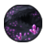 |
mineral_rich |
| lush_planet | |
| natural_beauty | |
| strong_magnetic_field | |
| titanic_life | |
| terraforming_candidate | |
| frozen_terraforming_candidate | |
| toxic_terraforming_candidate | |
| pm_wenkwort_gardens | |
| paradise_planet | |
| colonial_spirit_mod | |
| ocean_paradise | |
| ocean_paradise_hive | |
| payback_unified_purpose | |
| asteroid_impacts | |
| atmospheric_hallucinogen | |
| hazardous_weather | |
| dangerous_wildlife | |
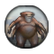 |
high_gravity |
| low_gravity | |
| wild_storms | |
| living_sea | |
| hostile_planet | |
| molten_mineral_rivers | |
| pulsar_frying_pan | |
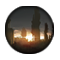 |
ship_junkyard |
| bleak_planet | |
| irradiated_planet | |
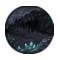 |
mineral_poor |
| tidal_locked | |
| unstable_tectonics | |
| weak_magnetic_field | |
| payback_debris_field | |
| holy_planet | |
| lithoid_crater |
{kind=link}
{kind=link}
{kind=link}
{kind=link}
{kind=link}
{kind=link}
{kind=link}
{kind=link}
{kind=link}
{kind=link}
{kind=link}
{kind=link}
{kind=link}
{kind=link}
{kind=link}
| Planet modifier (other) | ID |
|---|---|
| alloy_relic | |
| ancient_harvesters | |
| gaia_world | |
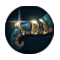 |
ancient_trade_route |
| pm_planetary_mechanocalibrator | |
| colonial_remains | |
| eat_the_titans | |
| energy_relic | |
| engineered_nature | |
| atmospheric_hallucinogen_good | |
| freed_stasis_dissidents | |
| heavy_metal | |
| paragon_origin_humble_monument | |
| minerals_relic | |
| fumongus_monitor_pops | |
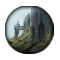 |
spiritual_happy_with_open_loop_temple |
| happy_with_open_loop_temple | |
| magnetic_research_boost | |
| machine_care_museum | |
| numistic_magnetostrips | |
| food_rich_planet | |
| soothing_crystals | |
| paragon_origin_residential_monument | |
| paragon_origin_rich_monument | |
| second_home | |
| good_vibrations | |
| star_mall_habitat | |
| subterranean_expansion | |
| subterranean_civilization | |
| superflare_avoided | |
| wasteland_infrastructure | |
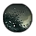 |
tamed_nanite_swarm_modifier |
| the_memorex | |
| sentinels_planet_modifier | |
| watery_grave | |
| pm_yuht_cleansing | |
| pm_wenkwort_zen | |
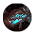 |
all_seeing_shard |
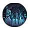 |
fortress_trophy |
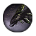 |
voidspawn_trophy |
| stellar_devourer_trophy | |
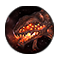 |
ether_trophy |
| dread_trophy | |
| shard_trophy | |
| tiyanki_trophy | |
| scavenger_trophy | |
| sky_dragon_trophy | |
| infused_atmosphere | |
| wraith_trophy | |
| dead_god_planet | |
| factorator_industrial_network | |
| terraformation_nucleus_side_effect | |
| penal_colony | |
| planet_uncertain_past | |
| qla_minder_vanity_palace | |
| abandoned_terraforming | |
| exofungus | |
| predatory_plants | |
| mastery_of_nature | |
| payback_unified_purpose |
{kind=link}
{kind=link}
{kind=link}
{kind=link}
{kind=link}
{kind=link}
{kind=link}
{kind=link}
{kind=link}
{kind=link}
{kind=link}
{kind=link}
{kind=link}
{kind=link}
{kind=link}
{kind=link}
{kind=link}
{kind=link}
{kind=link}
{kind=link}
{kind=link}
{kind=link}
{kind=link}
{kind=link}
| Empire modifier | ID |
|---|---|
| A Life Worthwhile | lost_moment_memento |
| Administrator Beryllia | borin_administrator_beryllia |
| Ageless | ageless |
| Amoeba Hunter | amoeba_hunting_buff |
| Anthem of Aurora | anthem_of_aurora |
| Armor Layering | talon_armor |
| Ascetic Approach | paragon_origin_rebel_spiritualist |
| Asteroid Encryption | asteroid_encryption |
| Asteroid Relay Stations | asteroid_relay_stations |
| Asteroid Thrusters | asteroid_thrusters |
| Bane of the Prophetess | bane_of_the_prophetess |
| Certified Educator | payback_student |
| Cheap Thrills | the_evermore_modifier |
| Closed Society | paragon_origin_rebel_xenophobe |
| Cloud Destroyer | cloud_hunting_buff |
| Combat Drugs | artifact_find_military_application_army |
| Contingency Calculation | contingency_calculation |
| Covenant: Composer of Strands (starting) | covenant_composer_of_strands_0 |
| Covenant: Composer of Strands (upgraded) | covenant_composer_of_strands |
| Covenant: Eater of Worlds (starting) | covenant_eater_of_worlds_0 |
| Covenant: Eater of Worlds (upgraded) | covenant_eater_of_worlds |
| Covenant: Instrument of Desire (starting) | covenant_instrument_of_desire_0 |
| Covenant: Instrument of Desire (upgraded) | covenant_instrument_of_desire |
| Covenant: Whispers of the Void (starting) | covenant_whisperers_in_the_void_0 |
| Covenant: Whispers of the Void (upgraded) | covenant_whisperers_in_the_void |
| Crystal Focus | crystal_focus |
| Crystal Hunter | crystal_hunting_buff |
| Debug Subroutine | debug_subroutine |
| Defeated Absurdism | first_contact_defeated_dadaism |
| Drone Destroyer | drone_hunting_buff |
| Drone Mining Techniques | drone_mining_techniques |
| Enhanced Solar Power | solar_harvesting_bacteria |
| Excluding Elixir of Life | youthful_elite |
| Fervor for Discovery | fervor_for_discovery_ap_modifier |
| Flagellating Movement | flagellating_movement |
| Flourishing Trade | fruitful_coop_country_mod |
| Forced Mindfulness | forced_mindfulness |
| Free From Strife | payback_no_revenge |
| Freedom Fighters | paragon_origin_rebel_militarist |
| Forged in Flames | paragon_origin_united_through_war |
| Full Circle | full_circle |
| Fully Streamlined Logistics | fully_streamlined_logistics |
| Glory to the Many | glory_to_the_many |
| Goes Around, Comes Around | goes_around_comes_around |
| Harmonious Crew | harmonious_crew |
| Harmonious Tune | harmonious_tune |
| Harmonized Society | paragon_origin_rebel_pacifist |
| Harsh Truth | engineered_species_revelation |
| Honorable Leadership | honorable_leadership |
| Hull Hardening | talon_hull |
| Imperial Charter | imperial_charter |
| Improved Code Standards | machine_empire_code_improvements |
| Improved Crime Fighting | judge_improved_crime_fighting_laws |
| Infinity Beckons | infinity_beckons |
| Inoculated Population | machine_empire_health_boost |
| Integrated Command | integrated_command |
| Interstellar Flow Prediction | space_lights_insights |
| Killer Microorganism | killer_librarian_organism |
| Luminous Blades | alloy_producing_knights |
| Management Insights | artifact_find_peaceful_application_leader_improvement |
| Mineral Mapping | mineral_mapping |
| Modern Trench War | modern_trench_war |
| Mysterious Universe | engineered_species_ignorance |
| Neural Bank | research_utopia |
| No Worries | no_worries |
| Open Society | paragon_origin_rebel_xenophile |
| Oracle | oracle_administration |
| Population United | vas_population_united |
| Predictive Trading Algorithms | preftl_hagglers_mod |
| Primordial Dragonslayers | slew_origin_dragon |
| Progress Oriented | paragon_origin_rebel_materialist |
| Prophesied Greater Destiny | ulastar_prophesied_greater_destiny |
| Radiation-Hardened Components | radiation_hardened_components |
| Reaffirmed Superiority | reaffirmed_superiority |
| Revolutionary Spirit | paragon_origin_rebel_player |
| Rightful Due | payback_revenge_words |
| Rudari Death Laser | rudari_death_laser |
| Secrets of the Baol | artifact_baol_research_completed |
| Secrets of the Cybrex | artifact_cybrex_research_completed |
| Secrets of the First League | artifact_league_research_completed |
| Secrets of the Inetian Traders | secrets_of_the_inetian_traders |
| Secrets of the Irassians | artifact_irassian_research_completed |
| Secrets of the Vultaum (biological) | artifact_vultaum_research_completed_suppressed |
| Secrets of the Vultaum (machine) | artifact_vultaum_research_completed_machine |
| Secrets of the Zroni | artifact_zroni_research_completed |
| Sentinel Data | sentinel_data |
| Settled Differences | fotd_settled_differences |
| Shallarian Terraforming Knowledge | shallarian_terraforming_knowledge |
| Shared Elixir of Life | youthful_people |
| Skrand Crisis Insight | crisis_studied |
| Spectral Residue Studies | spectral_residue_studies |
| Spurred by the Past | spurred_by_the_past |
| Straight Talkers | straight_talkers |
| Streamlined Logistics | streamlined_logistics |
| Strengthened Government | paragon_origin_strengthened_government_i |
| Stuffed Toy | stuffed_toy |
| Syamelle's Blessing | syamelles_blessing |
| Technology of the Divine | technosphere_praising |
| The Chosen of Zarqlan | chosen_of_zarqlan |
| The Gains of Freedom | gains_of_freedom |
| The Mirror of Knowledge | black_hole_pantagruel_research |
| The Redemption of the Charynoi | charynoi_redemption |
| The Singularity Processor | infinity_calculations |
| Transcended Consciousness | gestalt_black_hole_good |
| Triumviri | fotd_triumviri |
| Tiyanki Butcher | tiyanki_butcher |
| Trophies of the Doomslayer | doomslayer_quest_complete |
| Unbidden Ritual | unbidden_ritual |
| Underdog | payback_underdog |
| Unified Thought | engineered_species_ownway |
| United In History | skrand_story |
| Universal Translator | universal_translator |
| Void Loops | void_loops |
| Zombie Contract Manipulation | zombie_contract_manipulation |